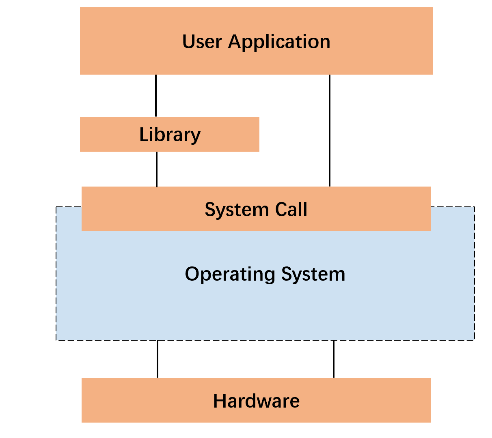

A compiler is an important software infrastructure to translate source programs developed using high-level language (e.g., C, Python, or Java) into semantic equivalent binary programs in low-level languages (e.g., x86, RISC, or ARM). Furthermore, the generated binary programs by a compiler are linked against libraries to create the final executables.
In this lab, you will gain a deeper understanding of compiler by creating a toy compiler from a minimal subset of C to RISC-V. In the meanwhile, you will implement a minimal subset of C libraries to understand how to create language libraries (runtimes) in general.
When you finished the lab, zip your code files with the file name student ID-lab-1.zip (e.g., SA19225789-lab-1.zip) and submit it to the Online Teaching Platform. The deadline is 23:59, Oct. 13, 2023 (Beijing time). Any late submission will NOT be accepted.
C language library files are a collection of precompiled functions and data that can be reused in programs. Library files provide a modular way to organize and share code for reuse in different programs. In this section, let us start by implementing a minimal C library: mini-lib. You should download this code skeleton to start with.
The following figure depicts the overall structure of the software stack: on top of the underlying hardware are operating systems which manages not only resources but also applications; libraries reside in the middle level which utilized operating system resources via system calls; applications reside on top of the software stack, which may invoke functions in libraries or operating systems.

int puts(char *s) {
long n = strlen(s);
long r;
asm(CALL(SYS_WRITE)
"movq $1, %%rdi\n"
"movq %1, %%rsi\n"
"movq %2, %%rdx\n"
"syscall\n"
"movq %%rax, %0\n"
: "=r"(r)
: "r"(s), "r"(n)
: "%rax", "%rdi", "%rsi", "%rdx");
return (int)r;
}
This library makes use of
system calls
to implement its functionalities. Specifically, we make
use of the Linux
x86-64 system calls, which is useful
to understand this code. You may also want to refer to
the
inline assembly specification.
Here, we make a self-contained explanation to the above code: this code implements the system call
write(fd, buf, size)
according to the system call specification, the system call
number (i.e., $1) is loaded into the
%rax register, and the arguments
fd, buf, and size
are loaded into registers %rdi,
%rsi, and
%rdx, respectively.
When the system call returns, the return value resides
in the %rax register.
void exit(int status);
int alarm(unsigned int seconds);
After implementing the puts(), exit(), and alarm() functions, compile and run the project to justify your answer.
css-lab@tiger:~$ ./notmain.out
The result are similar to the output below.
hello, world
hello, world
hello, world
hello, world
hello, world
Alarm clock
In this section, we are going to read and understand a compiler called mcc. mcc is a toy compiler from MiniC (a minimal subset of C), to x86-64. Then, you will extend the mcc compiler to support RISC-V, a recent and popular RISC ISA.
Before writing any code, you should first set up required software. Specifically, we need flex and bison to build the compiler front-end: flex is a tool used for generating lexical analyzers, whereas Bison is a tool used for generating syntax analyzers.
css-lab@tiger:~$ sudo apt-get install flex
css-lab@tiger:~$ sudo apt-get install bison
To double-check the installation is successful:
css-lab@tiger:~$ flex --version
css-lab@tiger:~$ bison --version
You do not need to write any code for flex and bison in this lab. But you can refer to the flex document and bison document, if you are interested.
To use mcc compile code, you need make it first, and then you can use mcc to compile your code. For example:
css-lab@tiger:~/lab1/mcc$ make
css-lab@tiger:~/lab1/mcc$ ./mcc input.c
mcc will compile input.c and generate an executable named a.out in current directory.
Hint: You should install the RISC-V environment
on your Ubuntu.
Install RISC-V cross-compiler tool:
css-lab@tiger:~$ sudo apt install gcc-riscv64-linux-gnu
Select a directory to pull the source of spike
and compile it:
css-lab@tiger:~$ sudo apt install g++
css-lab@tiger:~$ sudo apt-get install device-tree-compiler
css-lab@tiger:~$ git clone https://github.com/riscv/riscv-isa-sim
css-lab@tiger:~$ cd riscv-isa-sim
css-lab@tiger:~/riscv-isa-sim$ mkdir build
css-lab@tiger:~/riscv-isa-sim$ cd build
css-lab@tiger:~/riscv-isa-sim/build$ ../configure
css-lab@tiger:~/riscv-isa-sim/build$ make
css-lab@tiger:~/riscv-isa-sim/build$ sudo make install
To double-check the installation is successful:
css-lab@tiger:~$ spike --help
Use static link to generate final executables.
For example, to compiler the file hello.c:
css-lab@tiger:~/lab1/mcc$ riscv64-linux-gnu-gcc -static hello.c
css-lab@tiger:~/lab1/mcc$ spike pk a.out
bbl loader
hello, world
Happy hacking!